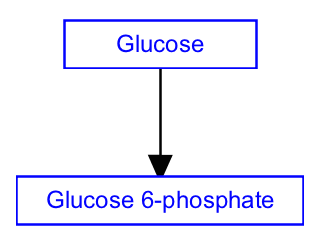

Background
The conversion of one metabolite into another comprises the fundamental biological process of metabolism. Often catalyzed by enzymes and chained together in a series, each conversion reaction involves a change in the chemical structure of a metabolite or small molecule. Conversion reactions are thus drawn as two metabolites and a mim-conversion interaction, pointing from the subtrate to the product. MIM is a diagram convention that includes specific notations for interactions, which are included in WikiPathways. Since their meaning is specific, they should be used only in specific circumstances, as in this case, for a conversion between two metabolites.
Your Mission
Draw the conversion reaction depicted in this figure:
- Launch PathVisio and select File > New to start a new pathway. Close the Pathway attributes dialog.
- In the upper left of the canvas, the Pathway Information area will be displayed, and will say "Title: New Pathway". Select this by clicking on it, and in the Properties tab select "Homo sapiens" in the Species menu.
- Perform the challenge tasks:
- Select Metabolite from the Data Node palette in the Objects tab.
- Click on the canvas to place the node.
- Double-click on the node to open its properties.
- Search for “glucose”; Choose any of the entries that just say “glucose”; Click OK to select the identifier, and then click OK again to close the node properties window.
- Repeat these steps to make the “glucose 6-phosphate” metabolite node. Note that searching for exact matches of metabolite names can be tricky, as some databases might use the name "glucose 6-phosphate", while others use "glucose-6-phosphate".
- Select the mim-conversion arrow from the MIM interactions palette in the Objects tab:
- Click anywhere on the canvas to create the interaction.
- Drag each end of the interaction over a target area on each node (highlighted in green on hover); Note source vs target. The video below shows how to attach the ends of the interaction to the nodes.
- (Optional) Align nodes using toolbar actions. To align nodes, select them both, then click the Align horizontal centers button from the toolbar.
- Done!
- When you have completed the challenge, save your work as a GPML file under File > Save As.
- Drag-and-drop the GPML file below to submit.